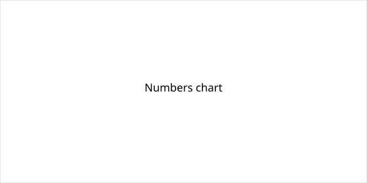

United States · Middle East · 25 October 2026
President Trump said a U.S. strike on Iran was possible as soon as Sunday or that a deal might be reached.

What is agreed across desks
On Saturday 24 October 2026, after casting an early ballot in Florida, President Donald Trump told reporters that the United States was “thinking about” striking Iran and that it was possible “maybe tomorrow.” He also said there was “a possibility we’ll have a nice, big, beautiful agreement.” He used the phrase “another little Epic Fury,” referring to the codename of prior U.S. military operations against Iran. These remarks were reported by Al Jazeera, India Today, NDTV and other outlets. No wire service reported confirmation that an order for a Sunday strike had been issued or that strikes had begun by early Sunday morning America/Los_Angeles time. Separate reporting noted that Central Command had prepared options for renewed strikes and that Iranian officials had warned of possible responses involving undersea cables.
What is only a quote
Trump’s statements about the timing of a possible strike and the possibility of a deal are the words of the president. They do not constitute an official order, a Defense Department announcement, or an Iranian acceptance. Claims that strikes “will” occur on Sunday treat a conditional remark as a scheduled fact. Iranian characterizations of the war as a U.S. “quagmire” are also statements by officials, not independent assessments of military balance.
Mechanism a reader needs
Presidential remarks on military options can be deliberate signaling, testing of reaction, or genuine contingency. Actual employment of force requires orders through the chain of command, notification procedures, and usually visible activity by aircraft, ships or missile units. The absence of such confirmation in initial reporting does not prove that no planning occurred; it means the action, if any, was not yet publicly documented. “Epic Fury” is a previously used operational name; reuse of the phrase does not by itself establish a new campaign.
What this story is not
It is not a report that strikes occurred on Sunday. It is not a treaty or a signed agreement. The photograph is an exterior of the White House; it is not a picture of any aircraft, ship or Iranian facility.

Source articles and scores
| Outlet | Headline | T | N | C |
|---|---|---|---|---|
| Al Jazeera | Iran war live: Trump hints at possible Sunday Iran attack or deal reached | 90 | −5 | 85 |
| India Today | Trump says he could strike Iran today, doesn't rule out 'beautiful deal' | 88 | 0 | 90 |
Images: Wikimedia Commons type photograph of the White House. Caption states type versus event. onerror to local SVG. No crossorigin.